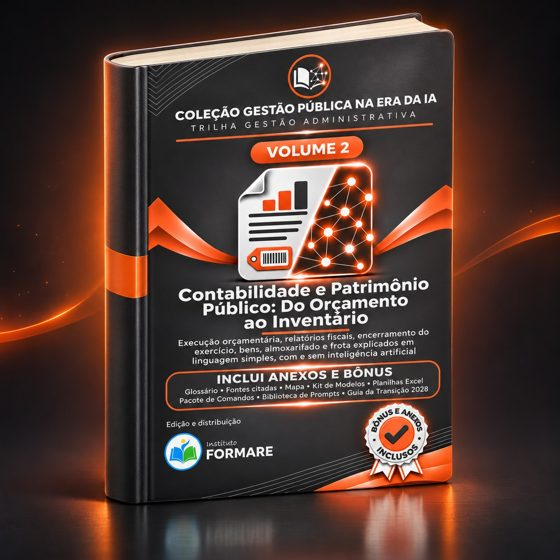
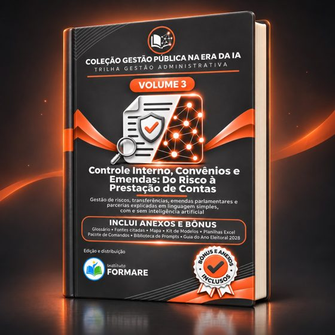

Folha prévia na mesa. Fecha amanhã.
E você precisa ter certeza de que cada verba tem lei, ato e frequência por trás antes de fechar.
O roteiro do Departamento Pessoal público inteiro, passo a passo: folha, eSocial, previdência e LRF em linguagem simples, com ou sem inteligência artificial.
PDF + modelos em Word e Excel · Entrega por e-mail · Garantia de 7 dias
E você precisa ter certeza de que cada verba tem lei, ato e frequência por trás antes de fechar.
Depois do prazo, atualização, juros e multa contam desde o atraso. E o desconto do servidor não pode ficar no caixa.
O contrato acabou, ninguém avisou o DP, e o salário integral apareceu na prévia. Pagamento indevido é difícil de recuperar.
A correção exige reabertura e retificação. E uma rubrica com incidência errada repete o erro todo mês.
Dependendo da faixa da despesa com pessoal, o ato pode ser vedado ou nulo. E é o DP que entrega o número da despesa com pessoal.
CPF e conta bancária de servidores num grupo de mensagens. E o prazo para comunicar o incidente já está correndo.
“Quando um desses passos falha, o erro aparece depois, quase sempre com custo: um pagamento indevido, uma multa, um apontamento do tribunal de contas, um servidor prejudicado.”
Trecho da Apresentação do Volume 1
O Departamento Pessoal de um órgão público é o lugar onde a lei vira número.
Quando a rotina do DP mora na cabeça de uma pessoa, ela vai embora junto com essa pessoa: na aposentadoria, nas férias, na mudança de setor. Quem fica herda prazos, rubricas e repasses sem mapa.
O Volume 1 coloca essa rotina no papel. Ele percorre o caminho completo de um vínculo, do ingresso ao desligamento, com roteiros que você pode seguir passo a passo e o fundamento legal de cada etapa.
O objetivo é um só: que o seu DP funcione mesmo no dia em que você não estiver lá.
Você decide se usa IA. O conteúdo técnico está inteiro na primeira metade.
O roteiro completo, a base legal e os erros mais comuns. Quem não usa IA, ou ainda não tem uma ferramenta autorizada no órgão, lê só esta metade e não perde nada do conteúdo técnico.
Na mesma ordem e com os mesmos títulos: o que entregar à IA e o que retirar antes (dados pessoais), o comando pronto, um exemplo, como conferir a resposta, o erro típico da IA e o limite dela.
A IA auxilia. O servidor do DP confere. O agente competente decide.
A regra que atravessa o livro inteiro. Nenhuma resposta da IA é ato administrativo.Cada capítulo abre com a ideia central e uma situação real de DP, para você saber logo do que se trata.
O trabalho em ordem, com o fundamento de cada etapa e os erros comuns que aparecem no caminho.
Uma lista para conferir antes de seguir e um modelo editável pronto para usar no seu órgão.
Toque em cada capítulo para ver o que ele ensina e o erro que ajuda a evitar.
Como classificar cada pessoa do quadro: efetivo, comissionado, função de confiança, temporário, empregado público, agente político e estagiário.
Evita: regra da CLT aplicada a estatutário, temporário renovado para necessidade permanente, comissionado em tarefa operacional. “O erro mais comum do DP não é de cálculo: é de classificação.”
Nomeação, posse, exercício e contrato, cada um com sua data e seu efeito.
Evita: cadastrar a data da posse como data de exercício (o que muda o estágio probatório e o primeiro pagamento), prazos contados sem o estatuto e sinal de nepotismo que passa despercebido.
A folha paga o que tem fundamento: lei, ato e frequência. Como conferir a prévia antes de fechar.
Evita: verba sem lei nem ato, proporcional com data errada, pagamento acima do teto, desconto sem base e o hábito de “fechar e só depois conferir”.
O evento certo para cada vínculo e a conferência dos totais antes de fechar.
Evita: evento de RGPS usado para servidor do RPPS, S-1299 fechado sem conferir, rubrica com incidência errada e DARF que sai a menor.
Separar os regimes, conferir a base e as alíquotas, a guia e o prazo do repasse.
Evita: repasse calculado sobre a prévia, regimes misturados, desconto tratado como caixa e pagar só o principal depois do prazo.
Formas de saída, verbas, prazo e o evento correto no eSocial.
Evita: manter na folha quem já saiu, usar a data do pedido no lugar da data de efeito, pagar fora do prazo e esquecer o banco do consignado.
Os limites da Lei de Responsabilidade Fiscal, o que o DP entrega à contabilidade e quais atos ficam vedados em cada faixa.
Evita: entregar o líquido em vez do bruto, esquecer a contribuição patronal, misturar dados da Câmara com os da Prefeitura e praticar ato de pessoal sem consultar a faixa.
Publicar o que é público e proteger o que é pessoal: pedidos de acesso à informação, vazamentos e inventário de dados.
Evita: planilha da folha enviada por aplicativo de mensagens, atestados em pasta compartilhada, CPF ou endereço entregues num pedido e o incidente escondido.
Todas as datas do DP organizadas em três camadas: o mês, o ano e o mandato.
Evita: o calendário que mora na cabeça de uma pessoa, copiar o ano anterior e esquecer fins de contrato e marcos do mandato.
Prontos para copiar e colar, organizados por capítulo. Cada um traz uma frase de segurança, e o último de cada capítulo serve para conferir a resposta da IA.
De prefeituras, câmaras, autarquias e consórcios públicos.
E precisa de um roteiro para não depender da memória de ninguém.
Que respondem pela folha e precisam saber o que conferir antes de assinar.
Que precisam entender o que o DP faz para decidir bem.
A Trilha Gestão Administrativa segue o caminho do trabalho: primeiro as pessoas, depois o dinheiro e os bens, por fim o controle e os recursos que vêm de fora.
As pessoas
Folha, eSocial, previdência, desligamento, LRF e LGPD. 8 capítulos, calendário anual, 9 modelos e 88 comandos de IA.

O dinheiro e os bens
Orçamento, empenho, liquidação e pagamento, relatórios fiscais, bens, almoxarifado, frota e fechamento do exercício. 12 capítulos, 13 modelos e 5 planilhas com fórmulas.

O controle e os recursos de fora
Plano de auditoria pelo risco, convênios, emendas parlamentares, fundo a fundo e parcerias com OSC. 12 capítulos, 13 modelos e 4 planilhas com fórmulas.
Porque tudo começa nas pessoas. A folha é onde a lei vira número todos os meses, e é o DP que entrega à contabilidade o quadro da despesa com pessoal, o número que a LRF acompanha. É a base sobre a qual os Volumes 2 e 3 trabalham.
Quem começa pelo Volume 1 encontra no checkout uma condição especial para completar a trilha com os Volumes 2 e 3.
Garantia de 7 dias. Se, dentro desse prazo, você achar que o livro não serve para a sua rotina, pede o reembolso pela própria plataforma de pagamento e recebe o valor de volta.
No checkout, você pode completar a trilha com os Volumes 2 e 3 em condição especial.
Não. A primeira metade de cada capítulo ensina o trabalho sem IA e traz todo o conteúdo técnico. A segunda metade é para quem quer usar IA no mesmo processo.
Serve. Quem não tem uma ferramenta autorizada lê só a primeira metade e não perde nada. Quando a ferramenta chegar, a segunda metade já está pronta, com o cuidado de retirar dados pessoais antes de usar.
Funciona. O livro mostra o caminho e o fundamento nacional de cada etapa e indica onde conferir a lei do seu ente. Ele não substitui a legislação local nem o parecer jurídico do órgão; ajuda você a chegar a eles mais preparado.
Sim. O livro foi escrito para o DP de prefeituras, câmaras, autarquias e consórcios públicos, para as chefias que respondem pela folha e para os gestores.
Não. O livro organiza o trabalho do DP e mostra o que conferir, o que entregar e a quem perguntar. As decisões continuam com o agente competente, e as dúvidas de interpretação, com o jurídico do órgão.
Depois da confirmação do pagamento, você recebe por e-mail o acesso ao livro em PDF e aos modelos editáveis em Word e Excel.
São textos prontos para copiar e colar numa ferramenta de IA, um para cada passo do roteiro. Cada comando traz uma frase de segurança, e o último de cada capítulo serve para conferir a resposta que a IA deu.
O livro cita a legislação e a jurisprudência em que se baseia, incluindo normas de 2026, e lista todas num anexo para você conferir na fonte.
Eles completam a Trilha Gestão Administrativa. Quem compra o Volume 1 encontra no checkout a opção de levar os Volumes 2 e 3 em condição especial.
Você tem 7 dias de garantia. Dentro desse prazo, pede o reembolso pela plataforma de pagamento e recebe o valor de volta.
Volume 1 · DP Público: do Ingresso ao Desligamento · R$ 67
Quero o roteiro do DP →